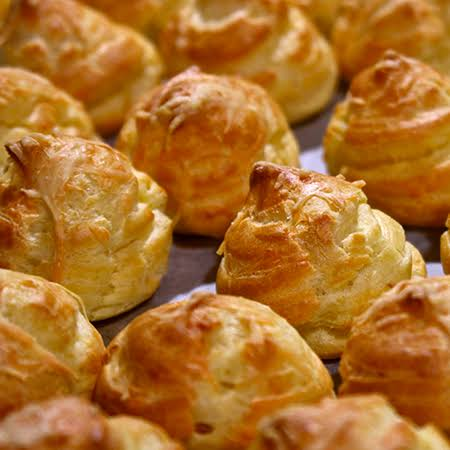

Gougères
Ingrédients
30×
- 250 ml d'eau
- 100 g de beurre
- sel
- poivre
- 150 g de farine
- 4 œufs
- 70 g de comté râpé
- 1 jaune d'œuf

Préparation
Étape 1
Chauffer 250 ml d'eau avec 100 g de beurre, sel et poivre. Hors du feu, ajouter 150 g de farine.
Étape 2
Dessécher la pâte sur feu doux jusqu’à ce qu’elle n’attache plus à la casserole.
Étape 3
Incorporer 4 œufs un par un, puis 70 g de comté râpé.
Étape 4
Former des petits tas sur du papier sulfurisé avec 2 cuillères ou une poche à douille. Dorer au 1 jaune d'œuf.
Étape 5
Enfourner environ 20min à 180ºC.
Résumé
250 ml d'eau
100 g de beurre
sel
poivre
150 g de farine
Chauffer
Dessécher la pâte feu doux
4 œufs
70 g de comté râpé
Incorporer
1 jaune d'œuf
Former des petits tas Dorer
Enfourner 180ºC